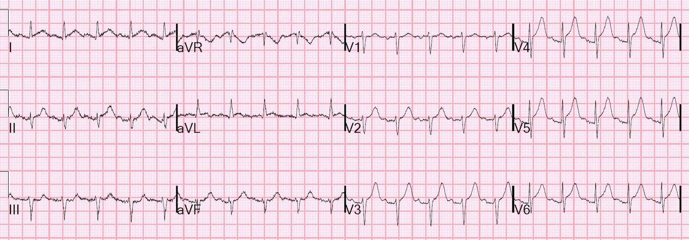
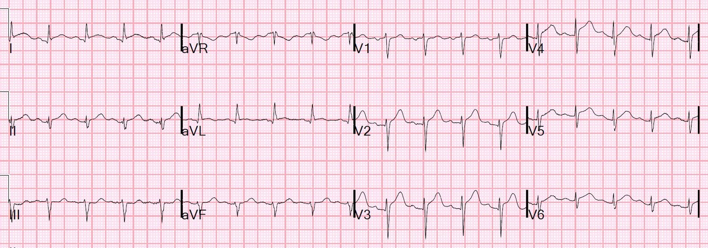
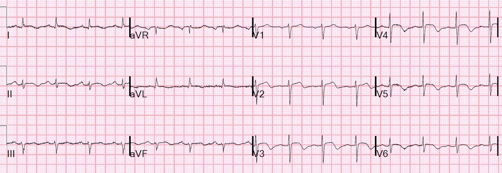
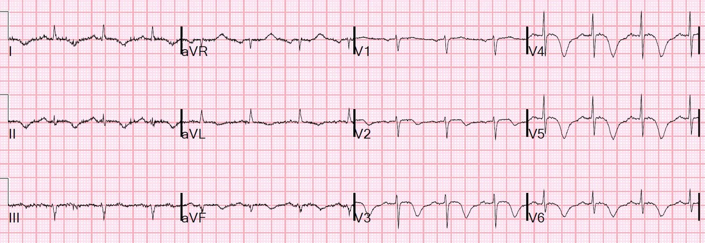

22/01/2018 — Đau ngực, nhịp nhanh xoang và ST chênh lên
Bản dịch tiếng Việt của bài "Chest pain, sinus tachycardia, and ST Elevation" – Dr. Smith’s ECG Blog. Giữ nguyên toàn bộ 5 hình ảnh và 3 video của bản gốc.
Tôi đang đọc lướt các điện tâm đồ trên hệ thống thì thấy bản này:


Bạn nghĩ gì?
Tôi lập tức lo ngại một ca tắc LAD đoạn gần. Mặc dù nhịp nhanh xoang nhìn chung là yếu tố chống lại hội chứng vành cấp (ACS), một nhồi máu cơ tim thành trước diện rộng có thể làm thể tích nhát bóp giảm nặng đến mức gây nhịp nhanh bù trừ và có thể là sốc tim sắp xảy ra.
Tôi xem liệu đã có siêu âm tim tại khoa cấp cứu (ED) chưa, và quả là có:
Mặt cắt trục dọc cạnh ức:
Hình ảnh kém, nhưng vẫn có thể thấy chức năng vùng mỏm kém
Mặt cắt trục ngắn cạnh ức:
Hình này cho thấy thành trước co bóp kém.
Hãy so sánh độ co ngắn và dày lên của thành sau (đối diện đầu dò) với thành trước (gần đầu dò nhất)
Mặt cắt 4 buồng từ mỏm:
Rối loạn vận động thành vùng mỏm
Vùng đáy co bóp tốt.
Đến lúc này tôi vẫn chưa biết gì về bệnh nhân, nhưng lo ngại một STEMI trước-bên cấp (tắc LAD đoạn gần).
Tôi đến trao đổi với các bác sĩ đang điều trị. Họ cũng lo ngại tắc LAD và đã mời tim mạch hội chẩn.
Đây là bệnh sử:
Một phụ nữ lớn tuổi có tiền sử đái tháo đường và tăng huyết áp tự đi bộ đến viện vì đau ngực dữ dội kiểu bóp nghẹt 10/10, khởi phát cấp, lan ra sau lưng. Cơn đau bắt đầu một giờ trước khi đến viện. Bà chưa từng bị như thế này bao giờ.
Với bệnh sử đó, tôi không còn nghi ngờ gì về chẩn đoán.
Khoa tim mạch đã làm siêu âm tim chính thức. Đây là kết quả. (Trước đây bà có siêu âm tim bình thường với phân suất tống máu 65%):
–Thất trái kích thước, bề dày bình thường và chức năng tâm thu giảm nặng.
–Phân suất tống máu thất trái ước tính là 27%.
–Vùng rối loạn vận động thành khu trú rất rộng, vô động, liên quan mỏm, các đoạn giữa và đoạn mỏm của thành trước, thành bên, thành dưới và vách, kèm vùng đáy tăng động.
Hãy xem lại điện tâm đồ một lần nữa:

Tuy nhiên, có 2 mm ở V4-V6, nên theo tiêu chuẩn thì đây là chẩn đoán STEMI.
Cũng có ít STE ở aVL và I, kèm ST chênh xuống soi gương ở III và aVF.
Chỉ để cho thú vị, công thức 4 biến cho kết quả thế nào? (Thực ra, vì V4-V6 đã đủ chẩn đoán, siêu âm tim cũng vậy, chúng ta không nên để một con số thấp khiến mình từ bỏ chẩn đoán) QTc = 380, STE60V3 = 2, RAV4 = 8; QRSV2 = 7 = 18.68 (cao)
Điều thú vị là, cũng có một chút ST chênh lên ở chuyển đạo II. Điều này gợi ý có thể có ST chênh lên thành dưới nhưng không biểu hiện đầy đủ ở III và aVF, vì STE ở aVL tạo ra một lực đối kháng làm đoạn ST ở III và aVF bị kéo xuống.
Vì vậy có lẽ có ST chênh lên cạnh tranh nhau giữa một bên là I và aVL, bên kia là II, III, aVF. Điều này nghĩa là không chỉ có nhồi máu cơ tim trước-bên mà còn có cả nhồi máu cơ tim thành dưới, và hướng tới một LAD “vòng qua mỏm” (wraparound, típ III) xuống thành dưới. Điều này cũng được ủng hộ bởi siêu âm tim cho thấy rối loạn vận động thành lan tỏa.
Bệnh nhân được đưa đi chụp mạch vành cấp cứu:
Các động mạch vành sạch. LAD thuộc típ II (KHÔNG phải loại vòng qua mỏm). Do đó, ngay cả một huyết khối đã tự tiêu (autolysis) trong LAD cũng không giải thích được điện tâm đồ này (tắc một LAD típ II sẽ không tạo ra các dấu hiệu thành dưới như thế này trên điện tâm đồ và trên siêu âm tim).
Bệnh cơ tim do stress Takotsubo trở thành chẩn đoán có khả năng nhất, hay chắc chắn.
Troponin trả về là 0.222. Không lấy thêm troponin lần nào khác.
Ít lâu sau, bệnh nhân lên cơn sốt và được chẩn đoán viêm thận-bể thận.
Đây là điện tâm đồ sau thông tim:


Đây là điện tâm đồ ngày hôm sau:


Và rồi ngày tiếp theo:


Chẩn đoán cuối cùng:
Bệnh cơ tim do stress Takotsubo, khởi phát bất thường bằng đau ngực dữ dội kiểu bóp nghẹt, có lẽ do nhiễm khuẩn huyết từ viêm thận-bể thận.
Liệu có thể chẩn đoán được ca này bằng điện tâm đồ không?
Nhìn lại, chỉ từ điện tâm đồ thôi, có thể đã nghi ngờ mạnh takotsubo dựa trên ST chênh xuống ở aVR, không có ST chênh lên ở V1, và STE ở chuyển đạo II. Tuy nhiên, tất cả các dấu hiệu này đều có thể có với một LAD vòng qua mỏm xuống thành dưới.
Sinh lý bệnh của Takotsubo
Thiếu máu cục bộ lan tỏa ở các mạch máu nhỏ, gây ra đau do thiếu máu cục bộ, rối loạn vận động thành và các dấu hiệu trên điện tâm đồ. Chỉ có sự phân bố của các dấu hiệu này là khác, hoặc có thể khác, giữa STEMI và Takotsubo.
Liệu có thể phân biệt một cách đáng tin cậy ST chênh lên của Takotsubo với ST chênh lên do tắc LAD không?
Đoạn trích dưới đây lấy từ bài báo của chúng tôi vừa được đăng trực tuyến:
Tác giả: David F. Miranda, MD, Angie Lobo, MD, Brooks Walsh, MD, Yader Sandoval, MD,
Stephen W. Smith, M.D.
New Insights into the Use of the 12-lead Electrocardiogram for Diagnosing Acute Myocardial Infarction in the Emergency Department. (Những hiểu biết mới về việc sử dụng điện tâm đồ 12 chuyển đạo để chẩn đoán nhồi máu cơ tim cấp tại khoa cấp cứu)
Canadian Journal of Cardiology 34(2):132; tháng Hai năm 2018. Số chuyên đề: Advances and Controversies in Cardiac Emergency Care (Những tiến bộ và tranh cãi trong cấp cứu tim mạch).
https://www.sciencedirect.com/science/article/pii/S0828282X1731173X (bài báo trên ScienceDirect)
(Đang in, bản thảo đã được chấp nhận)
Bệnh cơ tim Takotsubo
Takotsubo có thể biểu hiện sóng T đảo ngược, nhưng cũng có thể có STE giống STEMI. Mặc dù các nghiên cứu trước đây gợi ý rằng tiêu chuẩn điện tâm đồ có thể phân biệt STE này với STEMI thành trước,57 y văn gần đây không ủng hộ kết quả đó.58 59 Mặc dù độ đặc hiệu của nhiều tổ hợp yếu tố điện tâm đồ đối với Takotsubo có thể > 95%, giá trị tiên đoán dương có thể thấp tới 67% do tỷ lệ hiện mắc Takotsubo thấp. Nhiều STEMI thành trước, đặc biệt do LAD vòng qua mỏm xuống thành dưới, có các dấu hiệu điện tâm đồ tương tự và cả hình ảnh mỏm tim phình dạng bóng.60 Vì vậy, chụp mạch vành thường là thiết yếu để loại trừ tắc mạch vành cấp, ngay cả khi hình ảnh STE và siêu âm tim đều gợi ý Takotsubo.
57. Kosuge M, Ebina T, Hibi K, và cs. Simple and accurate electrocardiographic criteria to differentiate takotsubo cardiomyopathy from anterior acute myocardial infarction. Journal of the American College of Cardiology 2010;55:2514-6.
58. Frangieh AH, Obeid S, Ghadri JR, và cs. ECG Criteria to Differentiate Between Takotsubo (Stress) Cardiomyopathy and Myocardial Infarction. Journal of the American Heart Association 2016;5.
59. Vervaat FE, Christensen TE, Smeijers L, và cs. Is it possible to differentiate between Takotsubo cardiomyopathy and acute anterior STEMI? J Electrocardiol 2015;48:512-9.
60. Mugnai G, Pasqualin G, Benfari G, và cs. Acute electrocardiographic differences between Takotsubo cardiomyopathy and anterior ST elevation myocardial infarction. J Electrocardiol 2015;48:79-85.
Thư mục có chú giải (các đoạn trích liên quan từ phần tóm tắt)
57. Kosuge và cs.:
“Việc không có sóng Q bệnh lý, không có thay đổi soi gương, có ST chênh lên ở chuyển đạo −aVR (tức là ST chênh xuống ở chuyển đạo aVR), và không có ST chênh lên ở chuyển đạo V1 nhận diện được TC (bệnh cơ tim takotsubo) với độ nhạy lần lượt là 42%, 94%, 97% và 94%, độ đặc hiệu lần lượt là 74%, 49%, 75% và 71%, và độ chính xác tiên đoán lần lượt là 71%, 53%, 77% và 73%.”
58. Frangieh và cs.:
“Khi so sánh STEMI với STE-TTC, ST chênh lên ở –aVR (ST chênh xuống ở aVR) là đặc trưng của STE-TTC với độ nhạy/
độ đặc hiệu là 43% và 95%, giá trị tiên đoán dương (PPV) 91% và giá trị tiên đoán âm (NPV) 62%. 0 .001= ST chênh xuống ở aVR đi kèm ST chênh lên ở các chuyển đạo thành dưới, độ nhạy/độ đặc hiệu là 14% và 98% (PPV là 89% và NPV
52%) (P=0.001), và 12% và 100% khi đi kèm ST chênh lên ở các chuyển đạo trước vách (PPV 100%, NPV 52%) (P nhỏ hơn 0 .001) Mặt
khác, STEMI được đặc trưng bởi ST chênh lên ở aVR (độ nhạy/độ đặc hiệu là 31% và 95% P nhỏ hơn 0 .001.
59. Vervaat và cs. đã đánh giá các tiêu chuẩn trước đó:
“Tiêu chuẩn điện tâm đồ hiện có kém chính xác hơn (76%) so với trong nghiên cứu gốc (95%), với khác biệt lớn về độ nhạy (26% so với 91%). Chỉ có vectơ ST mặt phẳng trán 60° là phân biệt được có ý nghĩa TC với tất cả các phân nhóm STEMI thành trước cấp (p < 0.01), với độ chính xác chẩn đoán chung là 81%. Biên độ trung bình ở các chuyển đạo thành dưới II và aVF cao hơn có ý nghĩa ở bệnh nhân TC so với tất cả bệnh nhân STEMI thành trước cấp (lần lượt p < 0.01 và p < 0.05), và biên độ trung bình ở các chuyển đạo trước tim V1 và V2 thấp hơn có ý nghĩa so với tắc LAD đoạn gần và đoạn giữa (p < 0.01).”
60. Mugnai và cs.
“Việc không có sóng Q bệnh lý, ST chênh xuống ở aVR và không có ST chênh lên ở V1 liên quan có ý nghĩa với TC (lần lượt: 52% so với 18%, p = 0.01; 47% so với 11%, p = 0.01; 80% so với 41%, p = 0.01). Phối hợp các dấu hiệu điện tâm đồ này nhận diện được TC với độ đặc hiệu 95% và giá trị tiên đoán dương 85.7%.”
Các ca bệnh cơ tim do stress Takotsubo khác
Bizarre T-wave Inversions in a Patient without Chest Pain (Sóng T đảo ngược kỳ dị ở một bệnh nhân không đau ngực)
DIffuse ST Elevation with Apical Ballooning: is it Takotsubo Stress Cardiomyopathy? (ST chênh lên lan tỏa kèm mỏm tim phình dạng bóng: có phải bệnh cơ tim do stress Takotsubo?)
COPD exacerbation, what do the ECG and bedside echo show? (Đợt cấp COPD, điện tâm đồ và siêu âm tim tại giường cho thấy gì?)
Two more Cases of Takotsubo Stress Cardiomyopathy (Thêm hai ca bệnh cơ tim do stress Takotsubo)
Diffuse ST elevation and Chest pain in an Agitated Middle-aged male: Anterior STEMI or Takotsubo Stress Cardiomyopathy? (ST chênh lên lan tỏa và đau ngực ở một nam giới trung niên kích động: STEMI thành trước hay bệnh cơ tim do stress Takotsubo?)
Respiratory Failure and ST Depression: Is there Posterior STEMI? (Reverse Stress Cardiomyopathy) (Suy hô hấp và ST chênh xuống: có STEMI thành sau không? (Bệnh cơ tim do stress thể đảo ngược))
Takotsubo Stress Cardiomyopathy, with Echocardiogram (Bệnh cơ tim do stress Takotsubo, kèm siêu âm tim)
Diffuse ST Elevation. What do you think? (ST chênh lên lan tỏa. Bạn nghĩ gì?)
Thất phải có bị ảnh hưởng trong bệnh cơ tim do stress Takotsubo không?
Bệnh cơ tim do stress thất phải (RV SCM) đã được mô tả, dường như đi kèm bệnh cơ tim takotsubo thất trái trong tới 25% trường hợp và liên quan đến chức năng thất trái xấu hơn. Xem bài này: và cả bài này:
http://content.onlinejacc.org/article.aspx?articleid=1142735
Bài học:
Không có hình ảnh giả STEMI cấp nào trên điện tâm đồ gây bối rối hơn bệnh cơ tim do stress (SCM), vì sinh lý bệnh ở mức tế bào bên dưới là như nhau. Hiếm khi chẩn đoán được mà không cần chụp mạch vành.